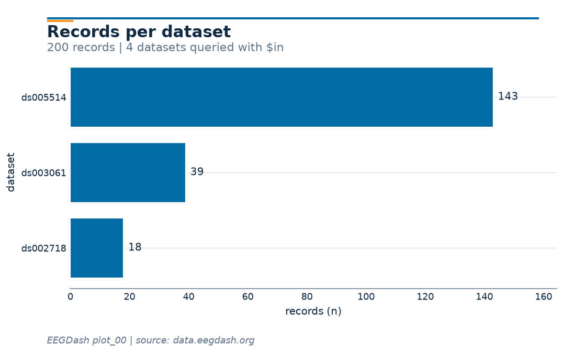

Note
Go to the end to download the full example code or to run this example in your browser via Binder.
Find datasets with the EEGDash API#
Difficulty 1 | Runtime: <2m | Compute: CPU
EEGDash exposes a metadata index over hundreds of BIDS-curated EEG datasets,
served by the public REST API at https://data.eegdash.org. The same
catalogue powers NEMAR, the EEGLAB-ecosystem portal
that hosts EEG/MEG datasets with browsing, compute, and provenance tools
(Delorme et al., 2022). The EEGDash client searches,
filters, and summarizes that index without downloading a single sample.
Keywords: loading, metadata, API
Learning objectives#
Open an
EEGDashclient and discover its public methods.Search records with multiple filter fields (BIDS entities + scientific metadata).
Convert query results into a
pandas.DataFramefor analysis.Compute cohort statistics (subjects, sampling rates, modalities) from metadata only.
Requirements#
About 1 minute on CPU; metadata only (< 5 MB on the wire).
Network required;
EEGDashconsumes the public API athttps://data.eegdash.org. No authentication is needed for read access.
Setup. No randomness here, so no seed.
import matplotlib.pyplot as plt
import pandas as pd
import eegdash
from eegdash import EEGDash
from eegdash.viz import EEGDASH_BLUE, style_figure, use_eegdash_style
use_eegdash_style()
print(f"eegdash {eegdash.__version__}")
eegdash 0.8.2
Step 1: Discover the EEGDash client#
EEGDash() wraps the REST endpoint. dir() is faster than the docs.
Predict. A read-only catalogue client should expose at least three
verbs: count, find, get. How many does EEGDash actually have?
Run. Print the public method list.
client = EEGDash()
public_methods = sorted(
m for m in dir(client) if not m.startswith("_") and callable(getattr(client, m))
)
print(f"EEGDash() exposes {len(public_methods)} public methods:")
for m in public_methods:
print(f" - {m}")
EEGDash() exposes 10 public methods:
- count
- exists
- find
- find_datasets
- find_one
- get_dataset
- insert
- search_datasets
- update_dataset
- update_field
Investigate. count, exists, find, find_one,
find_datasets, search_datasets, get_dataset, plus three
admin verbs. find and find_datasets are the read paths we use
throughout the gallery.
Validate your result#
A successful EEGDash() initialization and count() should return:
A method list containing
find,count, andget_dataset.A record count > 10,000 (the index is growing).
A projection with columns like
subject,session, andtask.Filtered results with extra columns like
sfreqandn_channels.
Step 2: How big is the catalogue?#
count runs server-side and is the cheapest call we can make.
records in the index: 342,784
Step 3: A broad scan vs. a targeted query#
Unfiltered find({}) returns a lightweight projection: BIDS entities
only, no signal-shape fields. A dataset filter unlocks the full record
(sampling rate, channel count, duration in samples).
Run both and compare the columns.
broad = pd.DataFrame(client.find({}, limit=200)).drop(columns=["_id"], errors="ignore")
focused = pd.DataFrame(
client.find(
{"dataset": {"$in": ["ds002718", "ds005514", "ds005863", "ds003061"]}},
limit=200,
)
).drop(columns=["_id"], errors="ignore")
print(f"broad : {broad.shape[0]} rows x {broad.shape[1]} cols")
print(f"focused : {focused.shape[0]} rows x {focused.shape[1]} cols")
extra = sorted(set(focused.columns) - set(broad.columns))
print(f"extra columns when filtered: {extra}")
broad : 200 rows x 16 cols
focused : 200 rows x 35 cols
extra columns when filtered: ['_has_missing_files', '_metadata_provenance', 'cap_manufacturer', 'ch_names', 'duration_seconds', 'eeg_ground', 'eeg_placement_scheme', 'eeg_reference', 'institution_name', 'manufacturer', 'manufacturers_model_name', 'montage_hash', 'nchans', 'ntimes', 'participant_tsv', 'power_line_frequency', 'recording_duration', 'recording_type', 'sampling_frequency', 'software_filters']
Step 4: What does one record actually contain?#
A record is a metadata document, one row per BIDS file, not the samples themselves. The fields cover BIDS entities (subject, task, session, run), scientific metadata (sampling rate, channel count, duration in samples) and storage hints (relative path, datatype). Per the EEG-BIDS spec (Pernet et al. 2019, doi:10.1038/s41597-019-0104-8), every recording exposes these fields.
fields = [
"dataset",
"subject",
"task",
"session",
"run",
"sampling_frequency",
"nchans",
"ntimes",
"datatype",
]
sample = focused.iloc[0]
record_view = sample[fields].to_frame("value")
record_view.loc["duration (s)"] = round(
sample["ntimes"] / sample["sampling_frequency"], 1
)
record_view
Step 5: Cohort analysis on the DataFrame#
value_counts, groupby, and describe cover most catalogue
questions; the EEGDash client stays out of the way.
Records per dataset.
focused["dataset"].value_counts().to_frame("records")
Sampling-rate distribution.
focused["sampling_frequency"].value_counts().head(8).to_frame("records")
Top tasks.
focused["task"].value_counts().head(8).to_frame("records")
Step 6: Visualise the cohort#
A horizontal bar of “records per dataset” reads at a glance.
counts = focused["dataset"].value_counts().iloc[::-1]
fig, ax = plt.subplots(figsize=(7, 4.2))
bars = ax.barh(counts.index, counts.values, color=EEGDASH_BLUE)
ax.bar_label(bars, padding=4, fontsize=9, color="#102A43")
ax.set_xlabel("records (n)")
ax.set_ylabel("dataset")
ax.set_xlim(0, counts.max() * 1.15)
style_figure(
fig,
title="Records per dataset",
subtitle=f"{len(focused)} records | 4 datasets queried with $in",
source="EEGDash plot_00 | source: data.eegdash.org",
)
plt.show()

Step 7: Dataset-level documents#
find_datasets returns the catalogue documents (one per dataset)
with DOI, BIDS version, demographics, and citation counts. Promote
them to a DataFrame and shortlist by subject count.
catalogue = pd.DataFrame(client.find_datasets({}, limit=300))
catalogue["n_subjects"] = catalogue["demographics"].apply(
lambda d: (d or {}).get("subjects_count", 0) if isinstance(d, dict) else 0
)
shortlist = (
catalogue.loc[catalogue["n_subjects"] >= 5, ["dataset_id", "n_subjects", "license"]]
.sort_values("n_subjects", ascending=False)
.head(10)
.reset_index(drop=True)
)
shortlist
A common mistake, and how to recover#
Run. Passing an unknown task name returns an empty list, not an error. The recovery is to surface what tasks the catalogue actually carries [Nederbragt et al., 2020].
unknown = client.find(task="FacePerceptionXYZ", limit=5)
print(f"records for unknown task: {len(unknown)}")
known_tasks = sorted(focused["task"].dropna().unique())[:8]
print(f"known tasks (first 8): {known_tasks}")
records for unknown task: 0
known tasks (first 8): ['DespicableMe', 'DiaryOfAWimpyKid', 'FaceRecognition', 'FunwithFractals', 'P300', 'RestingState', 'ThePresent', 'contrastChangeDetection']
Modify#
Your turn. Combine filters: try client.find(task="RestingState",
sampling_frequency=250, limit=20), then add subject="012". The
query language is keyword-style for simple cases and Mongo-style
({"$gte": 250}) for ranges.
records for task=RestingState: 20
Make#
Mini-project. Build a candidate cohort: pick a sampling-rate range
and a minimum subject count, then return a DataFrame with
[dataset_id, n_subjects, sampling_rates_seen]. Starter below.
def candidate_cohort(min_subjects: int = 5, sfreq_min: float = 200.0) -> pd.DataFrame:
"""Shortlist EEG datasets with >= ``min_subjects`` and at least one sampling rate >= ``sfreq_min``."""
rates_per_dataset = (
focused.groupby("dataset")["sampling_frequency"].agg(set).rename("rates")
)
out = catalogue.merge(
rates_per_dataset,
left_on="dataset_id",
right_index=True,
how="left",
)
out["max_sfreq"] = out["rates"].apply(
lambda s: max(s) if isinstance(s, set) and s else 0.0
)
return (
out.loc[
(out["n_subjects"] >= min_subjects) & (out["max_sfreq"] >= sfreq_min),
["dataset_id", "n_subjects", "max_sfreq"],
]
.sort_values(["n_subjects", "max_sfreq"], ascending=[False, False])
.head(10)
)
candidate_cohort(min_subjects=5, sfreq_min=200.0)
Result#
We surveyed the EEGDash index without pulling a single sample, ran multi-field queries, and shortlisted candidate datasets in a DataFrame.
Wrap-up#
Next: plot_01_first_recording.py actually downloads one record from
the shortlist above and inspects its raw signal, channels, and duration.
Try it yourself#
Swap
client.count({})forclient.count({"datatype": "eeg"}).Group
dfbydatasetand reportntimes.sum() / sampling_frequencyto get total recorded hours per dataset.Persist your shortlist with
shortlist.to_parquet("candidates.parquet").
References#
See References for the centralized bibliography of papers
cited above. Add or amend an entry once in
docs/source/refs.bib; every tutorial inherits the update.
Total running time of the script: (0 minutes 1.986 seconds)